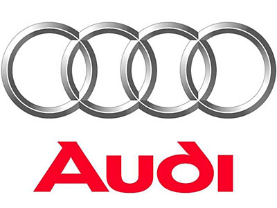

<!DOCTYPE html>
<html>
	<head>
			<meta http-equiv="Content-Type" content="text/html; charset=UTF-8" />
			<link rel="icon" type="png" href="logo.png" />
			<title>My car</title>
	</head>
	<body>
	<font  color=red>
		<center><h1><strong> MYCAR </strong></h1></center> 
	</font>
		<audio src="Black M - Sur ma route (Clip officiel).mp3" controls loop></audio>
		
		<ol id="menu"> 
			<a href="#pres"><li >Presentation </li></a>
			<li>sécurité d'une voiture</li>
			<a href="#type"><li>different type de voiture</li></a>
			<a href="#sigle"><li>Exemple logo voiture </li></a>
		</ol>

		<h1 id="pres"> <a href="#menu" ></a>Presentation </h1>
		<P>
			L'automobile est un moyen de transport privé parmi les plus répandus. Sa capacité est généralement de deux à cinq personnes, mais peut varier de une à neuf places.
			L'usage limite l'emploi du terme automobile aux véhicules possédant quatre roues, de dimensions inférieures à celle des autobus et des camions, mais englobe parfois les camionnettes. Bien qu'étant des «véhicules automobiles », les motocyclettes ne sont pas habituellement classées dans cette catégorie.
		</P>
			<h1><a href="#menu" ></a>sécurité active d'une voiture </h1>
		<p>
			<STRONG>L' ABS (Anti blocage system) ou ABR (anti blocage des roues)</STRONG>
			Permet de ne pas bloquer ses roues en cas de freinage d'urgence.
			Ce système ne permet pas de diminuer la distance de freinage mais me permet de garder le pouvoir directionnel de mon véhicule: Je peux tourner mon volant et éviter un obstacle tout en freinant très fort car mes roues ne se bloque pas.</p>
		</p>
		<P><stong>L'ESP Correcteur de trajectoire</stong>Ce système permet d'accèlérer sur certaines roues et en freine d'autres.
			Cela peut m'aider à revenir dans une trajectoire en virage ou en mordant le bas côté.
			Attention, je dois par moi même adpater l'allure sur un virage ou un croisement...
			L'AFU Assitance au Freinage d'Urgence
			Ce système permet d'amplifier fortement le freinage en cas d'urgence.
			Il est couplé à l'ABS et aux feux de détresse.
		</P>
		<p>	<STRONG>Le régulateur de vitesse </STRONG>me permet de maintenir une vitesse constante sans agir sur les pédales. Ce système ne peut se mettre que des grands axes routiers ou sur des autoroutes.
			Je dois le désactiver dès que je vois un danger à l'avant pour reprendre la maîtrise de mon véhicule. Pour le désactiver il vous suffit de freiner ou débrayer.
		</p>
		<p><STRONG>Le régulateur de vitesse "intelligent"</STRONG>Ce nouveau système permet de maintenir une vitesse constante mais aussi de réguler sa vitesse selon la distance de sécurité avec le véhicule de devant.</p>
		<P>
			Si je me rapproche trop alors la vitesse diminue d'elle même.
		</P>
		<p><strong>Le limiteur de vitesse.</strong>Ce sytème me permet de ne pas dépasser une limitation de vitesse.
			Je garde la maîtrise de mon véhicule avec les pédales mais l'accélération se bloque à la vitesse que j'ai programmé.
			En cas de danger je n'ai pas la nécessité de le désactiver. A savoir: Je peux le désactiver sur une accélération forte.
			Le radar de recul et la caméra de recul.Un radar de recul me permet de détecter un obstacle sur l'arrière de mon véhicule lors d'une marche arrière par un signal sonore. 
			La caméra de recul peut compléter ce système en me donnant une image sur ce qui se passe à l'arrière.
			Attention, ces aides ne doivent pas remplacer la vigilance du conducteur qui doit se retourner en vision direct lors d'une marche arrière pour voir ce qui arrive latéralement derrière lui.</P>
		<p>
		<p>
			<strong>Le contrôle des angles mort</strong>Ce système me signale par un logo dans mon rétroviseur et par un signal sonore de la présence d'un véhicule à côté du miens lors d'un dépassement ou d'une insertion... Cette aide ne doit pas remplacer la vigilance du conducteur qui doit effectuer un angle mort par lui même sur le côté du véhicule.
		</p>
		<p>
			Le GPS a pour comme principal utilité de me donner les directions à suivre. Cela me permet sur des routes mal connues de me concentrer plus sur la conduite que sur les directions à prendre. Attention, il est vivement conseillé de le programmer avant de partir et de le mettre sur mode sonore afin d'éviter de le regarder trop souvent.
			Un GPS peut aussi me donner des indications sur la fuidité du trafic, de la présence de travaux, des limitations de vitesse, de la proximité d'un poste de carburant... Un GPS ne peut pas et ne doit pas me donner les positions des radars mobiles...
		</p>

		<a href="http://only-code.e-monsite.com/pages/themes-principaux/sur-le-vehicule/"> Read more </a>

		<p>
			<h1 id ="type"><a href="#menu" ></a>Les différents type et modèle d'automobiles</h1>
			existe différentes catégorie de voitures dans le monde.Nous allons essayer de vous présenter les différents genres et type ci dessous, afin de vous aider à faire votre choix si vous décidez d'acheter une auto
		</p>
		<p>
			<strong>Les automobiles Break.</strong></br>
			<strong>Les voitures monospace</strong></br>
			<strong>Les citadines.</strong></br>
			<strong>Les cabriolets et coupé</strong></br>
			<strong>Le Pick up</strong></br>
			<a href="https://www.carsales.com.au/cars/offroad-4x4-lifestyles/" target="_blank"><strong>  Le 4x4 </strong></a></br>
			<strong>Le crossovers</strong></br>
			<strong>Les utilitaires et fourgonnettes</strong></br>
		</p>
		<p>	
			<h1 id="sigle"><a href="#menu" ></a>Exemple logo voiture </h1>

			
			<Pre border="1">	
				    
				
					<a href="videov1.html" aligne="center">volzvagene</a>
					 
						<a href="videov2.html" aligne="center">mazda</a>
							
								<a href="videov3audi.html" aligne="center">audi A8</a>
									
										<a href="videov4ar.html" aligne="center">alpha Romeo</a>
											 
												<a href="videov5c.html" aligne="center">Citroen</a>
													
														<a href="video5f.html" aligne="center">Ford</a>

			</pre>
		</p>	
	</body>
</html>